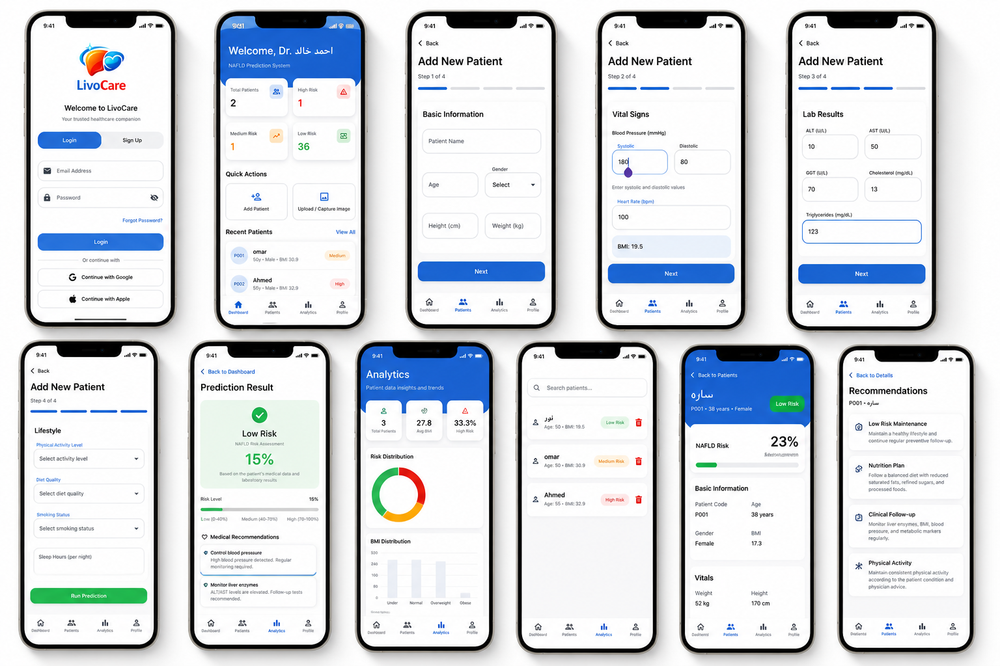

LivoCare is an intelligent healthcare mobile application built to empower doctors with faster, smarter, and data-driven clinical decision-making.
Physicians can manually enter patient medical data or upload diagnostic medical images for AI-assisted analysis to assess the risk of Non-Alcoholic Fatty Liver Disease (NAFLD).
The platform delivers predictive insights, patient analytics, automated risk categorization, and personalized healthcare recommendations in a seamless mobile experience.

Efficiently register, organize, and manage patient records in one centralized healthcare workflow.
Upload medical images for intelligent AI-powered liver risk assessment and faster diagnosis support.
Visualize patient health metrics, risk distributions, and actionable healthcare insights.
Analyze patient clinical indicators and generate real-time NAFLD risk predictions.
Provide doctors with personalized clinical recommendations based on prediction outcomes.
Protected login and secure access designed specifically for healthcare professionals.